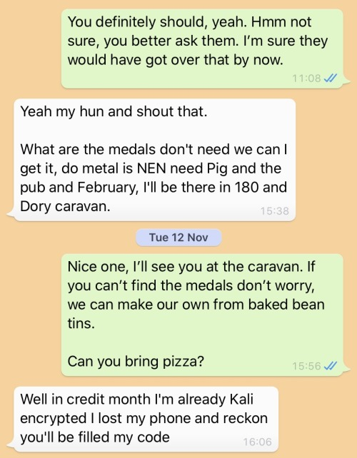
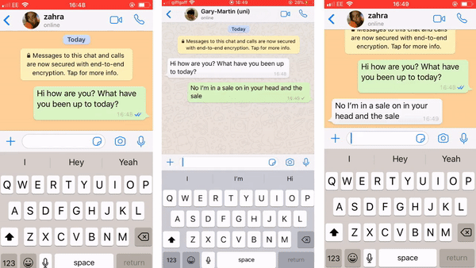
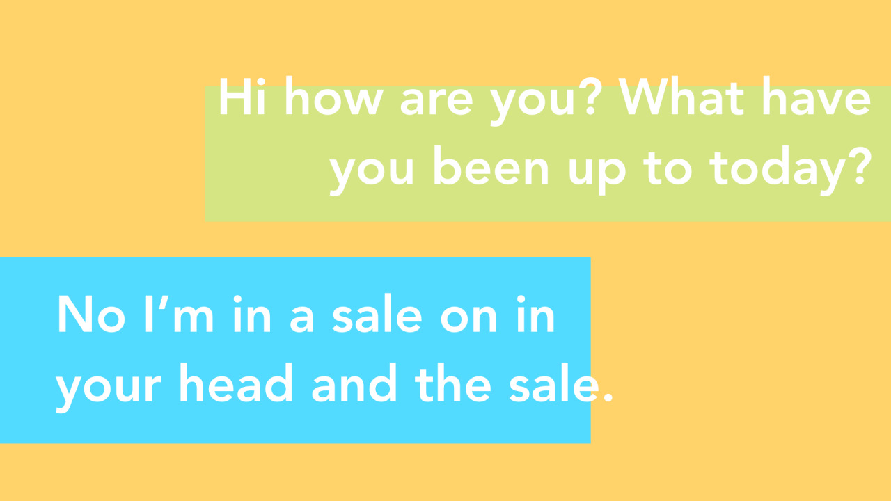

archive stuff, and keep track of things.
Back to Blog | Gary-Martin
Lost in Translation |
|---|
|
I had this idea a while ago of having a text conversation with people via WhatsApp using the built in voice type feature, but speaking in Welsh and seeing what the phone did with a non-English language. This initially came as an idea in response to the news that signs in Wales may have the Welsh removed from them. The idea being about how the Welsh language has to so often exist in the context of an ‘English world’. Luckily, this never transpired, and the idea didn’t get used. But it did get me thinking about the relationship people have with their phones. More specifically, how our phones impact our social relationships, and the way we communicate. I was wondering what it would be like to have a conversation with someone, where text messages weren’t edited, but just the phone’s interpretation of the voice type message. How much sense would these make? Would it be possible to continue this for a long time? What would happen if the other person spoke a different language and the phone interpreted this as English? In the on-going experiment, I am trying this out with a friend (Jack), who is speaks Welsh into the voice type, and I respond in English. From the first interaction, Jack’s messages didn’t make sense, but I didn’t want all of my messages to questions to Jack asking him to clarify his message. What happened was, without much thinking, I tried to make sense of his messages, putting together keywords and constructing new meaning from them. I then replied to his messages with a response that made sense in this new ‘fictional’ conversation setting. The things that were being discussed in the messages weren’t actually happening in real life. Jack and I had WhatsApp doubles that were playing out their own lives through the voice type translations of our ‘real’ selves. An experiment that explores the role of sound in visual contexts. Conversations take place in WhatsApp utilising the voice type feature in to exchange each message, where I spoke in English and the recipient speaks another language. The voice type system interprets the non-English message in the context of the English language and types out words that sound most like words in English from its library. This idea is being developed from screen to stage. Ongoing conversations between myself and Jack (Utililux), are currently in the process of being interpreted into a script for a live soap-opera-style performance. The messages will be played out in a different context, further removing intended meaning from the recipient's message.   |